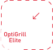
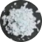
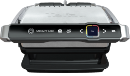
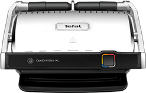
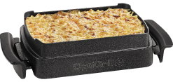

Go‘shtni marinadga
to‘liq solib,
sovutkichga qo‘ying.
Yangi OptiGrill Elite BETAKROR STEYK
ONLAYN XARID QILISHXom pishgan
O‘rtacha
qovurilgan
qovurilgan
Yaxshi
qovurilgan
qovurilgan
OPTIGRILL ELITE
BILAN TANISHING


Go‘shtning
qalinligini
aniqlaydi
“Superkorochka”
funksiyasi

Ixcham -
sizning oshxonangizga
mos keladi
Sensorli
boshqaruv
Kuyishga qarshi
qoplamali
yechiladigan plastinalar
Steyk
o‘z shirasida pishmaydi
Indikator steyk
tayyorligining aniq
darajasini ko‘rsatadi
OPTIGRILL ELITE UYDA STEYKNI TAYYORLASH
HAQIDAGI AFSONALARNI YO‘QQA CHIQARADI
Har doim
ideal natija
Mahsulotning qalinligini avtomatik o‘lchash:
gril qalinlikni o‘lchaganidan so‘ng,
o‘zi vaqt va haroratni belgilaydi va
indikatorda qovurish darajasi haqida xabar beradi.
Har doim
ideal natija
Mahsulotning qalinligini avtomatik o‘lchash:
gril qalinlikni o‘lchaganidan so‘ng,
o‘zi vaqt va haroratni belgilaydi va
indikatorda qovurish darajasi haqida xabar beradi.
Foydalanish oson
Patentlangan texnologiya steykni
siz istagandek: xom pishgan holda,
o‘rtacha yoki to‘liq qovurib tayyorlaydi.
Har qanday go‘shtni tayyorlaydi
Baliq, go‘sht, parranda va sabzavotlar:
endi jarayonni kuzatib borish shart emas – gril hammasini sizning o‘rningizga bajaradi.
Bu hali hammasi emas!
Baliq, go‘sht, parranda va sabzavotlar:
endi jarayonni kuzatib borish shart emas – gril hammasini sizning o‘rningizga bajaradi.
“Superkorochka” funksiyasi
xuddi restorandagidek
Searing Boost funksiyasi steykni xuddi
restorandagidek to‘q rangli chiziqlar bilan
mazali va chiroyli qobiqli qilib beradi.
Har doim ideal natija
Foydalanish oson
Har qanday go‘shtni tayyorlaydi
Bu hali hammasi emas!
“Superkorochka” funksiyasi
xuddi restorandagidek
FOYDALI LAYFXAKLAR
Go‘shtni qanday tanlash kerak?

Mukammal steyk qanday tayyorlanadi?

Go‘shtga qachon tuz qo‘shish kerak?
Go'shtni qanday marinadlash kerak?

Eng yaxshi tanlov

BO‘YIN
KURAK
QOVURG‘ALAR
FILELI BLOK
ORQA
LAHM GO‘SHT
SHOPOQ
QOVURG‘A GO'SHTI
BOLDIR
BOLDIR
TO‘SH
SON GO‘SHTI
Muqobil steyk
DENVER
Marmarli buqa kuragi ichki qismida joylashgan tishli ventral mushakdan tayyorlangan steyk. Yuqori marmarligi tufayli u juda shirali bo‘lib, go‘shtda yorqin ta’m va ishonchlilik mukammal birlashadi.
Retseptlar bo'limiga qarang →
Muqobil steyk
CHAKROLL
Orqaning o‘ta uzun mushaklari qismi bo‘lib, beshinchi qovurg‘agacha bo‘yin umurtqalari bo‘ylab ajralib turadi. Chakroll tuzilishi bo'yicha mashhur “Ribay”ning davomi bo‘lib, ta’mi jihatidan qimmatroq analoglarga yaqin steyk hisoblanadi.
Muqobil steyk
DENVER
Marmarli buqa kuragi ichki qismida joylashgan tishli ventral mushakdan tayyorlangan steyk. Yuqori marmarligi tufayli u juda shirali bo‘lib, go‘shtda yorqin ta’m va ishonchlilik mukammal birlashadi.
Retseptlar bo'limiga qarang →
Muqobil steyk
CHAKROLL
Orqaning o‘ta uzun mushaklari qismi bo‘lib, beshinchi qovurg‘agacha bo‘yin umurtqalari bo‘ylab ajralib turadi. Chakroll tuzilishi bo'yicha mashhur “Ribay”ning davomi bo‘lib, ta’mi jihatidan qimmatroq analoglarga yaqin steyk hisoblanadi.
Muqobil steyk
Flet-ayron
Marmarli buqachaning kurak qismi, top-bleyddan kesma. Unda tomirlar yo‘q va flet-ayron yumshoqlik bo‘yicha file-minyondan keyin turadi deb hisoblanadi.
Retseptlar bo'limiga qarang →
Muqobil steyk
Top-bleyd
Top-bleyd steyki kurakning eng yumshoq qismi hisoblangan Top-bleyd Praymdan kesib olinadi. Ushbu steykning o‘ziga xos jihati uning uzun tomiri bo'lib, pishirish jarayonida yumshaydi.
Klassik steyk
Ribay
Buqaning qovurg‘a qafasi orqa qismidan olingan kesma bo‘lib, eng yaxshi steyklardan biri hisoblanadi. Uning uchun beshinchidan o‘n ikkinchigacha qovurg‘adan go‘shtning bir qismi tanlab olinadi. Bu yerda steykni yumshoq va shirali qiladigan juda ko‘p yog‘lar mavjud.
Klassik steyk
Nyu-York/Striployn
13nchi qovurg‘adan son go‘shtigacha bel qismidan kesib olinadi. U bitta mushakdan iborat va parchaning chetida yog‘ qatlami mavjud. Bu zich go‘shtga va mol go‘shtining yorqin ta’miga ega nozik steykdir.
Klassik steyk
Porterxaus
Bel qismidan katta kesma. Steykda go‘shtni ikkiga ajratadigan suyak bo‘ladi. U avval baland olovda tayyorlanadi va o‘rtacha olovda yetiltiriladi.
Muqobil steyk
Ramp
U, shuningdek, romsteyk va cullote – sonning orqa yuzasidan olingan porsion steyk bo‘lib, eng shirali hisoblanadi. Tovada yoki grilda qovurish uchun ajoyib variant.
Klassik steyk
File-minyon
File-minyon steyklari lahm go‘shtdan kamida uch santimetr qalinliklar kesib olinadi.
Ushbu nimta go‘sht qismiga deyarli yuklama tushmaydi, shuning uchun u nozik va mayin ta’mga ega bo'ladi. Maxsus tadbirlar uchun ideal tanlovdir.
Retseptlar bo'limiga qarang →
Muqobil steyk
Machete
Hayvonning diafragmasidan tayyorlangan, yuqori darajada marmarlik, yorqinlik va intensiv ta’mga ega. Bu yumshoq go‘sht bo‘lib, maxsus tolali tuzilishga ega.
Retseptlar bo'limiga qarang →
BO‘YIN
KURAK
QOVURG‘ALAR
FILELI BOK
ORQA
LAHM GO‘SHT
SHOPOQ
QOVURG‘A GO'SHTI
BOLDIR
BOLDIR
TO‘SH
SON GO‘SHTI
Muqobil steyk
DENVER
Marmarli buqa kuragi ichki qismida joylashgan tishli ventral mushakdan tayyorlangan steyk. Yuqori marmarligi tufayli u juda shirali bo‘lib, go‘shtda yorqin ta’m va ishonchlilik mukammal birlashadi.
СRetseptlar bo'limiga qarang →
Muqobil steyk
CHAKROLL
Orqaning o‘ta uzun mushaklari qismi bo‘lib, beshinchi qovurg‘agacha bo‘yin umurtqalari bo‘ylab ajralib turadi. Chakroll tuzilishi bo'yicha mashhur “Ribay”ning davomi bo‘lib, ta’mi jihatidan qimmatroq analoglarga yaqin steyk hisoblanadi.
Muqobil steyk
DENVER
Marmarli buqa kuragi ichki qismida joylashgan tishli ventral mushakdan tayyorlangan steyk. Yuqori marmarligi tufayli u juda shirali bo‘lib, go‘shtda yorqin ta’m va ishonchlilik mukammal birlashadi.
Retseptlar bo'limiga qarang →
Muqobil steyk
Чакролл
Orqaning o‘ta uzun mushaklari qismi bo‘lib, beshinchi qovurg‘agacha bo‘yin umurtqalari bo‘ylab ajralib turadi. Chakroll tuzilishi bo'yicha mashhur “Ribay”ning davomi bo‘lib, ta’mi jihatidan qimmatroq analoglarga yaqin steyk hisoblanadi.
Muqobil steyk
Flet-ayron
Marmarli buqachaning kurak qismi, top-bleyddan kesma. Unda tomirlar yo‘q va flet-ayron yumshoqlik bo‘yicha file-minyondan keyin turadi deb hisoblanadi.
Retseptlar bo'limiga qarang →
Muqobil steyk
Top-bleyd
Top-bleyd steyki kurakning eng yumshoq qismi hisoblangan Top-bleyd Praymdan kesib olinadi. Ushbu steykning o‘ziga xos jihati uning uzun tomiri bo'lib, pishirish jarayonida yumshaydi.
Klassik steyk
Ribay
Buqaning qovurg‘a qafasi orqa qismidan olingan kesma bo‘lib, eng yaxshi steyklardan biri hisoblanadi. Uning uchun beshinchidan o‘n ikkinchigacha qovurg‘adan go‘shtning bir qismi tanlab olinadi. Bu yerda steykni yumshoq va shirali qiladigan juda ko‘p yog‘lar mavjud.
Klassik steyk
Nyu-York/Striployn
13nchi qovurg‘adan son go‘shtigacha bel qismidan kesib olinadi. U bitta mushakdan iborat va parchaning chetida yog‘ qatlami mavjud. Bu zich go‘shtga va mol go‘shtining yorqin ta’miga ega nozik steykdir.
Klassik steyk
Porterxaus
Bel qismidan katta kesma. Steykda go‘shtni ikkiga ajratadigan suyak bo‘ladi. U avval baland olovda tayyorlanadi va o‘rtacha olovda yetiltiriladi.
Muqobil steyk
Ramp
U, shuningdek, romsteyk va cullote – sonning orqa yuzasidan olingan porsion steyk bo‘lib, eng shirali hisoblanadi. Tovada yoki grilda qovurish uchun ajoyib variant.
Klassik steyk
File-minyon
File-minyon steyklari lahm go‘shtdan kamida uch santimetr qalinliklar kesib olinadi.
Ushbu nimta go‘sht qismiga deyarli yuklama tushmaydi, shuning uchun u nozik va mayin ta’mga ega bo'ladi. Maxsus tadbirlar uchun ideal tanlovdir.
Retseptlar bo'limiga qarang →
Muqobil steyk
Machete
Hayvonning diafragmasidan tayyorlangan, yuqori darajada marmarlik, yorqinlik va intensiv ta’mga ega. Bu yumshoq go‘sht bo‘lib, maxsus tolali tuzilishga ega.
Retseptlar bo'limiga qarang →
Pishirishdan oldin
-
Go‘shtni sovutkichdan 30–60 daqiqa
avval olib qo‘ying. -
Go‘sht xona haroratiga
yetadi va yaxshi
tuzilishga keladi.
Pishirish vaqtida
- Tuz qo‘shmang
- Go‘shtni teshmang
Pishirgandan keyin
- Qopqoq va alyumin zar qog‘oz bilan yoping
-
Pishirish vaqtining yarmiga teng
bir muddat ga qoldiring.
Pishirishdan 2 kun oldinmi?
SHUNISI IDEAL!
Tuz tashqi qatlamni quritgan holda go‘shtga singadi. Ovqatni pishirish vaqtida qobiq hosil bo‘ladi va hamma shirasi ichida qoladi.
Pishirishdan 4-5 soat oldinmi?
AJOYIB!
Tashqi qatlam biroz quriydi, go‘sht yanada shiraliroq bo‘ladi va qobiq osonroq hosil bo‘ladi.
Pishirishdan 1 soat oldinmi?
YAXSHI!
Tuz go‘shtni yetarlicha xushxo‘r va yanada shirali qiladi.
Bevosita pishirishdan oldin va pishirish vaqtidami?
BUNDAN MA’NO YO‘Q
Pishirishdan keyinmi?
YOMON EMAS!
Siz go‘shtni to‘g‘ri tuzlaysiz va kasirlagan tuz sizning ta’m sezishingizni yaxshilaydi.
Go'shtni qanday marinadlash kerak?
Foydasi
- Yumshoq go‘sht
- Xushbo‘ylikning ko'payishi
- Mos retseptlar tanlanishi
Marinad qanday tayyorlanadi?
MASALLIQLAR:
1/4 stakan soya sousi
1/4 stakan xantal
1/4 chashka tug‘ralgan piyoz
1/4 stakan jigarrang shakar
Ozgina vuster sousi
Murch
1/4 stakan soya sousi
1/4 stakan xantal
1/4 chashka tug‘ralgan piyoz
1/4 stakan jigarrang shakar
Ozgina vuster sousi
Murch
• Piyoz archiladi va
mayda to‘g‘raladi
• qalampir,
soya sousi, xantal
jigarrang shakar
va vuster sousi
qo‘shiladi va bitta yaxlit tarkibga
aylangunicha aralashtiriladi.
• Endi tayyor!
mayda to‘g‘raladi
• qalampir,
soya sousi, xantal
jigarrang shakar
va vuster sousi
qo‘shiladi va bitta yaxlit tarkibga
aylangunicha aralashtiriladi.
• Endi tayyor!
Ta’mni o‘tkir qilamizmi?
MASALLIQLAR:
250 ml suv
2 choy qoshiq toshtuz
2 choy qoshiq jigarrang
shakar
8 bo‘lak sarimsoqpiyoz
15 ta chili qalampiri
250 ml suv
2 choy qoshiq toshtuz
2 choy qoshiq jigarrang
shakar
8 bo‘lak sarimsoqpiyoz
15 ta chili qalampiri
• tuz va jigarrang
shakar birgalikda talqon qilinadi.
250 ml suvda eritiladi.
• sarimsoqpiyoz va chili qalampiri bankaga solinadi va ustiga suv quyiladi.
• banka yopiladi va bir hafta
davomida qorong‘i joyda saqlanadi.
• bir haftadan keyin aralashtiriladi
va past olovda dimlanadi.
• Hammasi tayyor!
shakar birgalikda talqon qilinadi.
250 ml suvda eritiladi.
• sarimsoqpiyoz va chili qalampiri bankaga solinadi va ustiga suv quyiladi.
• banka yopiladi va bir hafta
davomida qorong‘i joyda saqlanadi.
• bir haftadan keyin aralashtiriladi
va past olovda dimlanadi.
• Hammasi tayyor!
KONSTANTIN IVLEV
BILAN BIRGA TAOM TAYYORLAYMIZ
Mashhur bosh oshpaz va teleboshlovchi OptiGrill`da tayyorlanadigan
restoran taomlarining retseptlarini ulashadi
Ismaloq bilan
Denver biftek
Denver biftek
20 min
Buzilgan bodring bilan
Flet-ayron
Flet-ayron
30 min
Sabzavot salsa bilan
Machete biftek
Machete biftek
40 min
Biftek
File-minyon
File-minyon
20 min
Qishloq xo'jaligi Tovuqi
20 min
Sabzavot panjara
bilan shaverma Turkiya
bilan shaverma Turkiya
20 min
Qovoq va uy
qurilishi sosli panjara
pushti qizil ikra
qurilishi sosli panjara
pushti qizil ikra
20 min
Qisqichbaqasimon
sosli kalamar
va qisqichbaqalar
mini-kebaplar
sosli kalamar
va qisqichbaqalar
mini-kebaplar
20 min
O‘ZINGIZNING OPTIGRILL `INGIZNI TANLANG
Va haqiqiy boshliq bo'ling

GC750D30
OptiGrill Elite
- + quvvati 2000 Vt
- + ishlash yuzasi 600sm²
-
+ 12 ta avtomatik dastur:
steyklar, parranda, sosiskalar, burgerlar, baliq, sendvichlar, bekon, krevetkalar, kartoshka, qalampir, tomatlar va baqlajonlar - + indikator steykning tayyorligi aniq darajasini ko'rsatadi
- + sensorli boshqaruv
- + “Superkorochka” funksiyasi
GC712D34
OptiGrill Plus
- + quvvati 2000 Vt
- + ishlash yuzasi 600sm2: bir pishirishda 3-4 porsiya
- + 6 ta avtomatik dastur: steyklar, parranda, sosiskalar, burgerlar, baliq, sendvichlar
GC722D34
OptiGrill XL
- + quvvati 2000 Vt
-
+ ishlash yuzasi 800sm2:
bir pishirishda 6-8 porsiya -
+ 9 ta avtomatik dastur:
steyklar, parranda, sosiskalar, burgerlar, baliq, sendvichlar, bekon, krevetkalar
GC712834
OptiGrill Plus Black
- + quvvati 2000 Vt
- + ishlash yuzasi 600sm2
-
+ 6 ta avtomatik dastur:
steyklar, parranda, sosiskalar, burgerlar, baliq, sendvichlar

GC760D30
OptiGrill Elite XL
- + quvvati 2200 Vt
- + ishlash yuzasi 800sm2
-
+ 16 ta avtomatik dastur
steyklar, parranda, sosiskalar, burgerlar, baliq, sendvichlar, dengiz mahsulotlari, bekon, kartoshka, qalampir, tomatlar, baqlajonlar, qo‘y go‘shti, vegetarianlar uchun steyk - + indikator steykning aniq tayyorlik darajasini ko'rsatadi
- + sensorli boshqaruv
- + “Superkorochka”funksiyasi
GC724D12
OptiGrill Plus XL
+ o‘rab pishirish uchun uchlik
+ o‘rab pishirish uchun uchlik
- + quvvati 2000 Vt
-
+ ishlash yuzasi 800sm2:
bir pishirishda 6-8 porsiya -
+ 9 ta avtomatik dastur:
steyklar, parranda, sosiskalar, burgerlar, baliq, sendvichlar, bekon, krevetkalar
QO‘SHIMCHA UCHLIKLAR
Uydagi taomnomangizga xilma-xillik qo‘shing

XA725870
O‘rab pishirish uchun uchlik
- + kuyishga qarshi qoplama
- + termik izolyatsiyalangan tutqichlar
- + idishlarni idish yuvish mashinasida yuvish mumkin
XA723812
Vafli uchun uchlik
- + kuyishga qarshi qoplama
- + idishlarni yuvish mashinasida yuvish mumkin
.png)